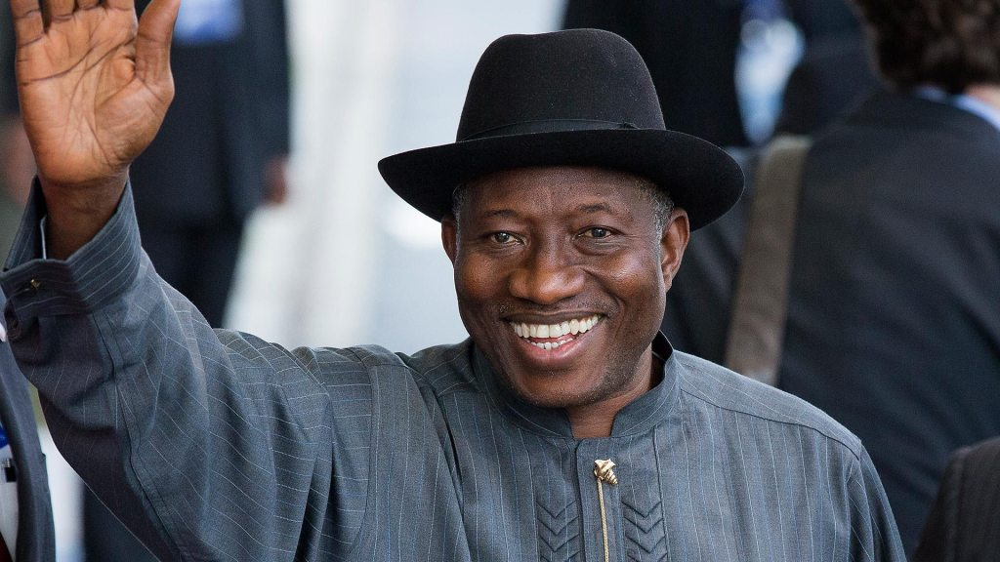

Goodluck Jonathan was born on 20 November 1957 in Ogbia to a Christian family of canoe makers, from the Ijaw minority ethnic group in Bayelsa state
He received a bachelor degree in zoology (second-class honours), a masters degree in hydrobiology and fisheries biology; and a doctorate in zoology from the University of Port Harcourt.
On 29 May 1999, Jonathan was sworn in as Deputy Governor of Bayelsa alongside Diepreye Alamieyeseigha who came in as the governor of the state on the platform of PDP. Jonathan served as Deputy Governor until December 2005. On 9 December 2005, Jonathan, who was the deputy governor at the time, was sworn in as the governor of Bayelsa State upon the impeachment of the current Governor Diepreye Alamieyeseigha by the Bayelsa State Assembly after being charged with money laundering in the United Kingdom.
Read more here